Found by M-03’s review. Since v0.428 a cancelled private testing with money has Print receipt. One case wasn’t drawn: Ava Chen paid $65 of the $85 (moved with her from the event), then her private testing was cancelled. Her receipt then says “Total due $85 · Paid to date $65 · Balance $20”, and her summary says “$20 more to collect” next to Print receipt, though her row (correctly) doesn’t. Nothing is owed on a cancelled private testing, and the $65 isn’t refunded (“Fees are non-refundable”). (Preview screenshots, fake data; the options are drawn on top of the real receipt.)
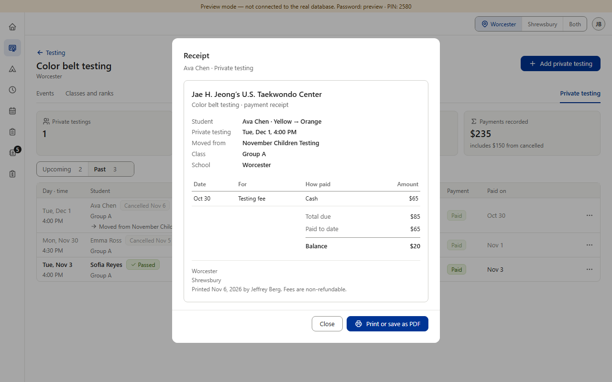
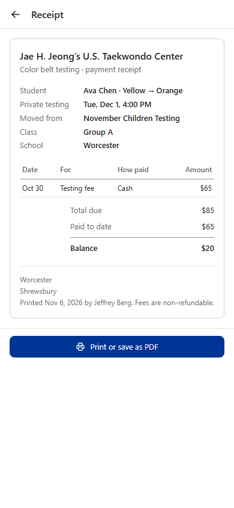
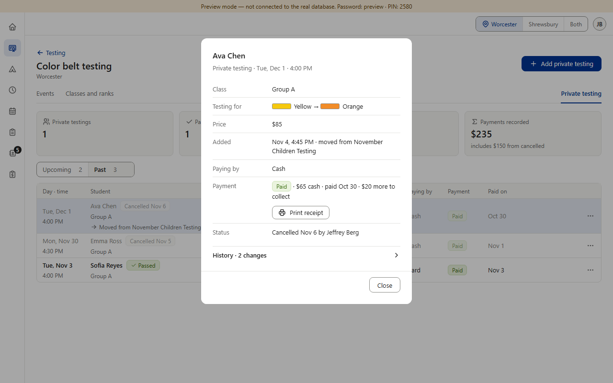
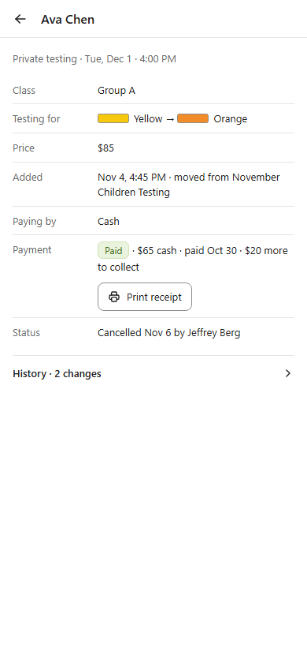
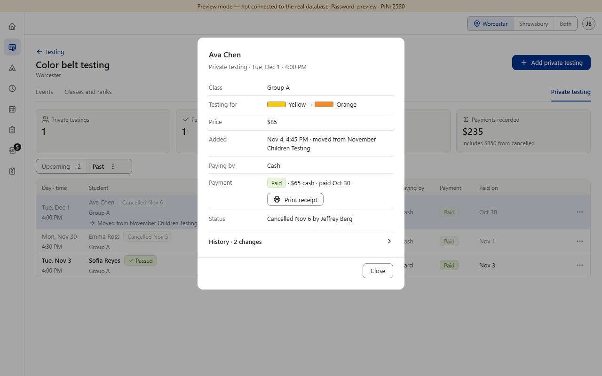
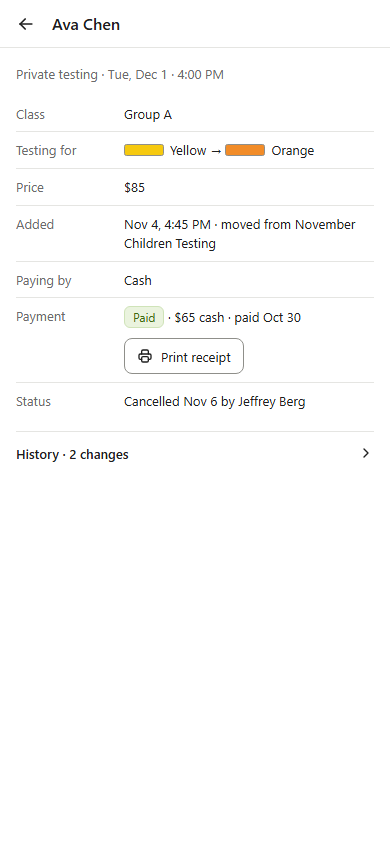
Both options also do two small things the review asked for: the receipt’s Private testing line says it was cancelled (“· cancelled Nov 6”), and the summary stops saying “$20 more to collect” on a cancelled one (its row already leaves that line out; picture above). Fully paid cancelled ones (Emma Ross) and every active one print as today.
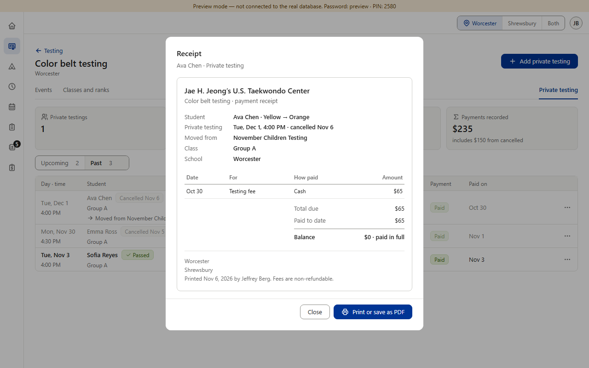
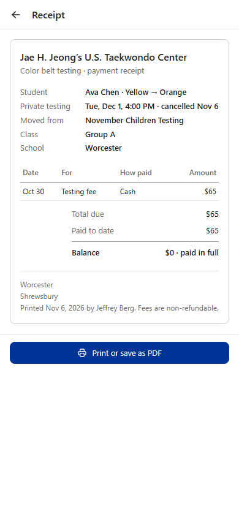
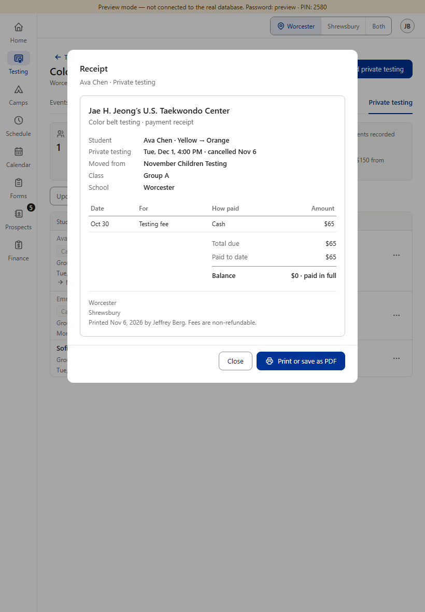
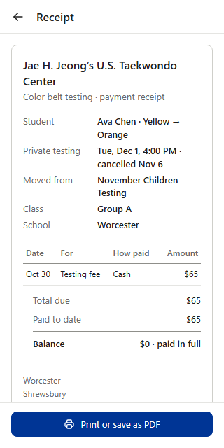
What it does: On a cancelled private testing, the receipt’s Total due is what was paid, so the balance is $0 (“paid in full”), and the cancelled date explains why the total is below the price.
+ A parent reading it can’t think they still owe $20 for a testing that was cancelled. Matches how the dashboard treats it: the row and the Not paid card don’t count anything as owed on a cancelled one. “Fees are non-refundable” at the bottom still says the $65 stays.
− The receipt no longer shows the $85 price on a cancelled one (the summary’s Price line still does).
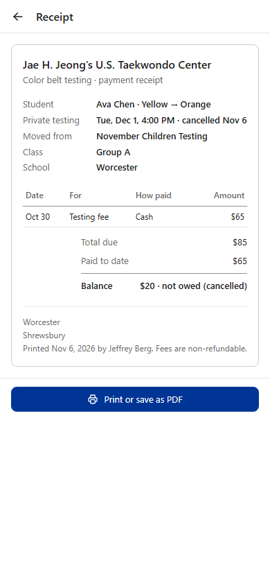
What it does: The receipt keeps the price as Total due and the $20 as the balance, with the words “not owed (cancelled)” after it.
+ Shows the full price and exactly what was and wasn’t paid.
− A $20 balance on a receipt is easy to read as money owed, even with the words after it; and it uses the shared receipt’s balance note, which the other sections use only for an amount that IS owed (“next due May 29”).
Answer: A or B.